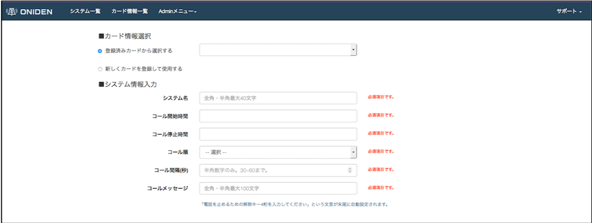

Service機能説明
ONIDENとは？
ONIDENは、サーバやネットワーク機器に障害が発生すると、登録されている電話帳リストへ繰り返し電話呼び出しを行うサービスです。1ユーザで無制限にシステムを追加することが可能です。
ONIDENの機能はとてもシンプルに「電話をかけ続けること」のみ。そのため、これまで利用してきた監視ツールや社内でのチャットアプリはそのままに、ONIDENの電話機能を追加することでより素早い障害対応が可能になります。
架電のしくみ
専用のAPI KEYを発行します。現在ご利用中の監視ツールにから架電APIへリクエストすることで電話を掛けます。
4桁の解除キーによる架電停止
4桁の解除キーを入力すると電話通知はストップします。解除キーは電話帳登録者別に設定することが可能です。
コール順やコール間隔、メッセージ内容も自由に設定可能
システムごとに、コール開始時間・コール停止時間・コール順・コール間隔(秒)・コールメッセージを自由に設定することができます。

電話帳リストへの登録は無制限
架電対象となる電話帳リストは無制限に登録が可能で、コール順はシステム毎に昇順・降順・ランダムから選択できます。 複数の電話帳登録後、行をドラッグ＆ドロップすることで、電話する順番を入れ替えることができます。